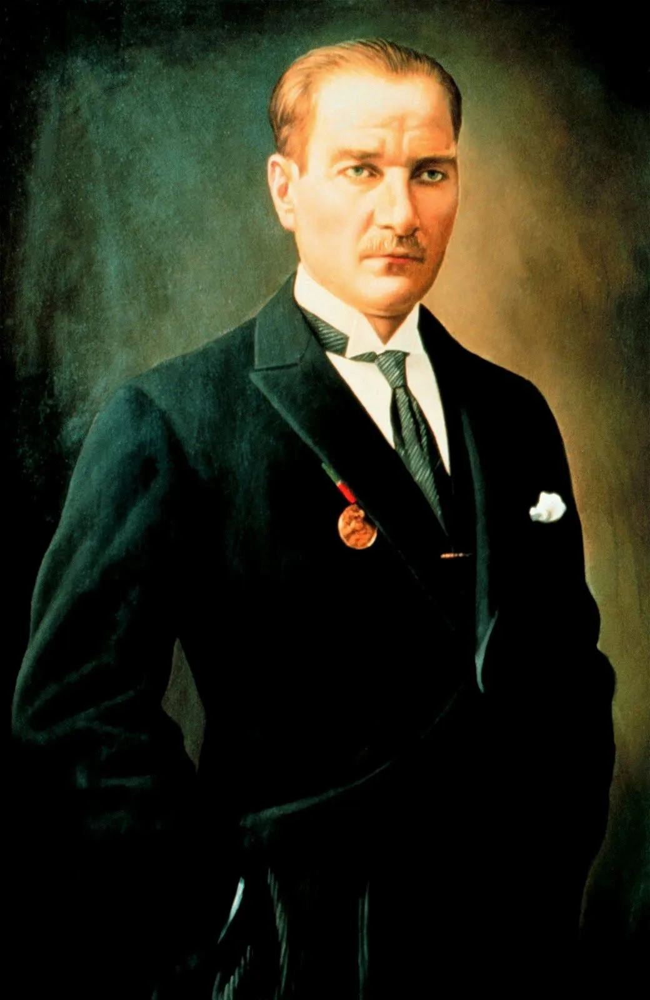
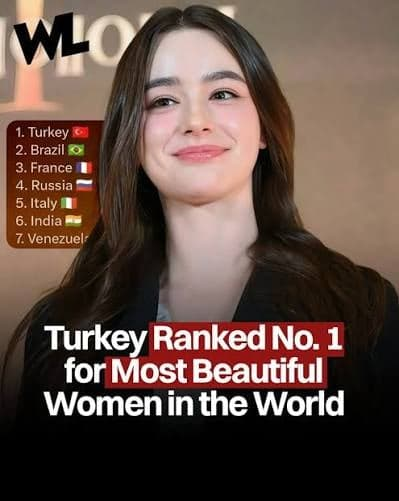
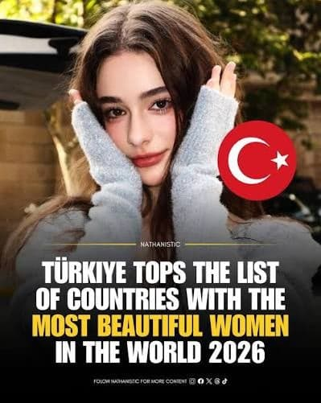
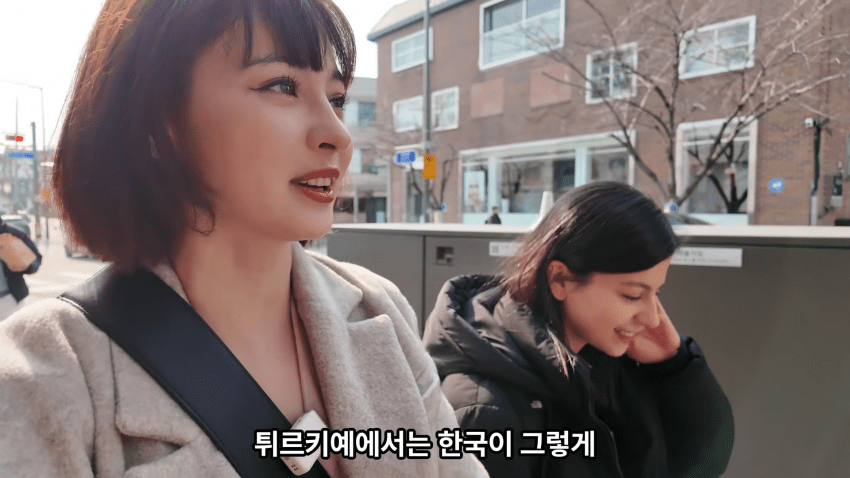
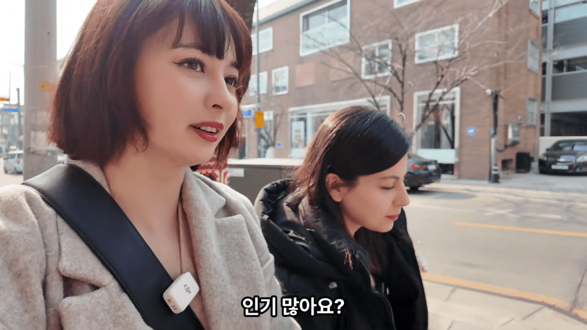
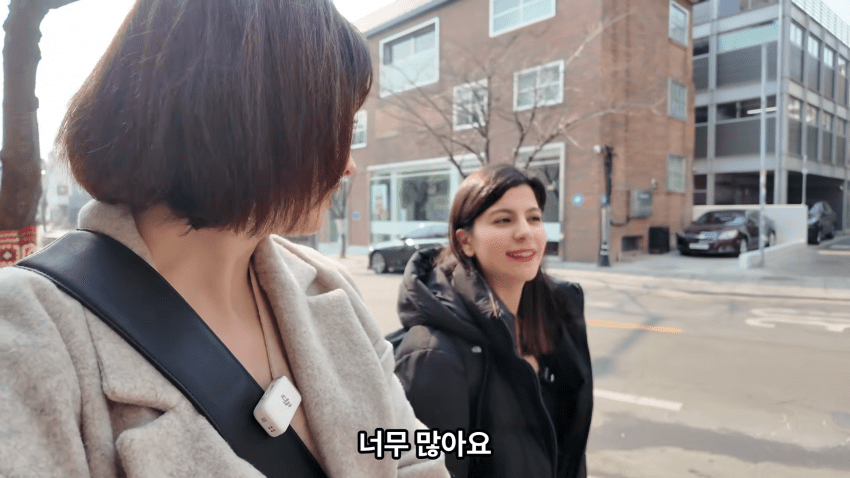
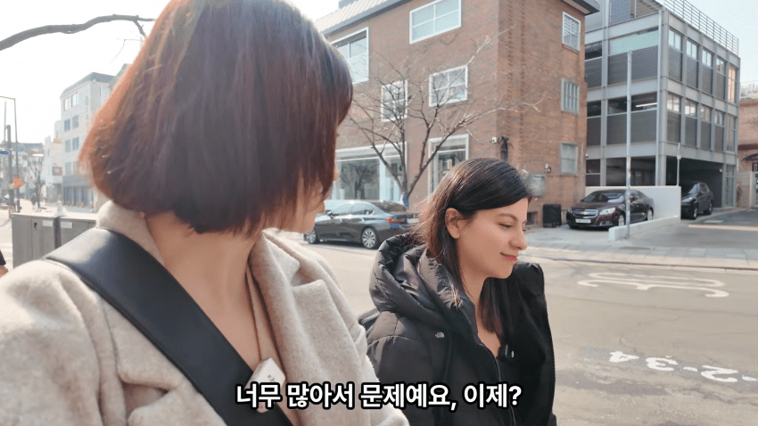
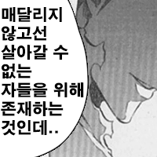

튀르키예
터키
오스만
이슬람의 종주국임

한국에서의 박정희보다 위상이 높은 국부 무스타파 케말 아타튀르크로 시작된 계속되는 개혁으로
히잡은 여성의 사회진출을 막는다며 히잡을 못쓰게함
이후에는 아예 착용 금지법도 있었고
친 이슬람이 정권을 잡아도
엄격한 정교분리와 히잡의 지양은 계속되고 있음


터키 여자들은 세계에서 가장 아름다운 여성으로 자주 뽑히는데
덕분에 히잡쓴 얼굴 말고 맨 얼굴을 볼 수 있음




정부 조사에 따르면 튀르키예인들은 한국인들에 대한 호감도도 매우 높고 형제의 나라라고 wwe도 해주는데
주갤러들은 못생긴 동남아 신부 구하지 말고 미녀의 나라 튀르키예로 향하는게 좋지 않을까?
아님말고
댓글
수집 당시 댓글 200개
ㅇㅇ · 11.10 09:23:19
마법거북이 · 11.10 09:23:41
· ㅇㅇ · 11.10 09:27:31
· ㅇㅇ · 11.10 11:06:11
· ㅇㅇ · 11.10 12:36:02
· ㅇㅇ · 11.10 12:40:11
ㅇㅇ · 11.10 09:25:26
ㅇㅇ · 11.10 09:27:09
ㅇㅇ · 11.10 09:27:39
씹덕1011일차 · 11.10 09:28:10
ㅇㅇ · 11.10 09:29:41
· ㅇㅇ · 11.10 14:15:19
· ㅇㅇ · 11.10 15:30:50
ㅇㅇ · 11.10 09:34:12
· ㅇㅇ · 11.10 16:54:39
ㅇㅇ · 11.10 09:34:41
ㅇㅇ · 11.10 09:36:49
· ㅇㅇ · 11.10 09:37:26
주만갤 · 11.10 09:43:32
ㅇㅇ · 11.10 09:43:46
ㅇㅇ · 11.10 09:46:23
ㅇㅇ · 11.10 09:54:08
ㅇㅇ · 11.10 09:59:39
ㅇㅇ · 11.10 10:01:28
ㅇㅇ · 11.10 10:02:49
· ㅇㅇ · 11.10 15:32:46
ㅇㅇ · 11.10 10:03:29
ㅇㅇ · 11.10 10:04:52
퀀텀 · 11.10 10:06:08
· 퀀텀 · 11.10 10:08:07
· ㅇㅇ · 11.10 10:13:13
· 퀀텀 · 11.10 10:25:12
· ㅇㅇ · 11.10 10:26:20
· 퀀텀 · 11.10 10:48:15
· ㅇㅇ · 11.10 10:55:02
· 퀀텀 · 11.10 10:59:22
· ㅇㅇ · 11.10 12:15:10
· 퀀텀 · 11.10 12:21:47
· 거마ㅓ요ㄱ · 11.10 13:02:52
· ㅇㅇ · 11.10 13:18:03
· 퀀텀 · 11.10 13:35:01
· ㅇㅇ · 11.10 15:05:43
· ㅇㅇ · 11.10 15:34:59
ㅇㅇ · 11.10 10:07:05
ㅇㅇ · 11.10 10:09:59
ㅇㅇ · 11.10 10:12:50
ㅇㅇ · 11.10 10:15:19
ㄱㅂㅈㄱㄷ · 11.10 10:17:34
ㅇㅇ · 11.10 10:18:10
· ㅇㅇ · 11.10 10:18:15
ㅇㅇ · 11.10 10:18:46
ㅇㅇ · 11.10 10:26:30
ㅇㅇ · 11.10 10:30:32
이지러너 · 11.10 10:33:41
· 큐큐 · 11.10 11:08:44
· 이지러너 · 11.10 11:14:18
· 큐큐 · 11.10 11:15:51
ㅇㅇ · 11.10 10:52:07
ㄲㄲ · 11.10 11:04:22
큐큐 · 11.10 11:09:27
ㅇㅇ · 11.10 11:12:55
· ㅇㅇ · 11.10 11:13:52
pyuru · 11.10 11:28:32
ㅇㅇ · 11.10 11:43:47
· ㅇㅇ · 11.10 11:52:32
· ㅇㅇ · 11.10 12:27:52
ㅇㅇ · 11.10 11:55:49
· ㅇㅇ · 11.10 11:56:21
ㅇㅇ · 11.10 12:07:15
ㅇㅇ · 11.10 12:13:05
ㅇㅇ · 11.10 12:28:59
ㅇㅇ · 11.10 12:37:24
· ㅇㅇ · 11.10 12:44:45
· ㅇㅇ · 11.10 15:38:36
· ㅇㅇ · 11.10 17:03:48
ㅇㅇ · 11.10 12:44:16
· ㅇㅇ · 11.10 15:40:06
ㅇㅇ · 11.10 13:17:05
· ㅇㅇ · 11.10 13:17:17
도퇘
X남
ㅇㅇ · 11.10 13:21:04
도태
한남
dd · 11.10 13:40:14
· ㅇㅇ · 11.10 15:55:24
ㅇㅇ · 11.10 13:52:37
ㅇㅇ · 11.10 13:52:40
ㅇㅇ · 11.10 13:52:44
ㅇㅇ · 11.10 13:56:09
· ㅇㅇ · 11.10 13:56:14
· ㅇㅇ · 11.10 13:56:33
· ㅇㅇ · 11.10 13:56:44
· ㅇㅇ · 11.10 13:57:35
· ㅇㅇ · 11.10 13:57:47
ㅇㅇ · 11.10 14:00:28
ㅇㅇ · 11.10 14:20:02
ㅇㅇ · 11.10 14:39:11
ㅇㅇ · 11.10 15:43:27
ㅇ · 11.10 16:13:05
ㅇㅇ · 11.10 16:30:22
ㅇㅇ · 11.10 16:30:46
ㅇㅇ · 11.10 18:30:39
ㅇㅇ · 11.10 19:11:24
· 도로롱도롱도롱 · 11.08 17:09:06
ㅇㅇ · 11.08 17:06:12
ㅇㅇ · 11.08 17:07:14
· ㅇㅇ · 11.08 17:07:54
· ㅇㅇ · 11.08 17:09:31
· 와히라나고미 · 11.08 17:11:04
· ㅇㅇ · 11.08 17:11:24
· ㅇㅇ · 11.10 09:24:56
· ㅇㅇ · 11.10 09:25:22
삼지연시 · 11.08 17:08:03
· ㅇㅇ · 11.08 17:11:10
ㅇㅇ · 11.08 17:09:00
와히라나고미 · 11.08 17:10:18
· 와히라나고미 · 11.08 17:11:37
· ㅇㅇ · 11.10 09:18:50
· ㅇㅇ · 11.10 09:44:47
ㅇㅇ · 11.08 17:10:30
· 친일친미친중혐한 · 11.10 09:01:34
· ㅇㅇ · 11.10 09:17:29
· ㅇㅇ · 11.10 09:19:08
니나혀 · 11.08 17:10:38
ㅇㅇ · 11.08 17:10:55
ㅇㅇ · 11.08 17:15:45
ㅇㅇ · 11.08 17:16:27
· ㅇㅇ · 11.10 08:54:03
· ㅇㅇ · 11.10 08:57:40
· 친일친미친중혐한 · 11.10 09:01:54
· ㅇㅇ · 11.10 09:12:13
· ㅇㅇ · 11.10 09:22:24
· 글쓰기드래곤 · 11.10 09:38:57
· ㅇㅇ · 11.10 09:40:30
· ㅇㅇ · 11.10 09:46:31
대충해 · 11.08 17:18:17
· ㅇㅇ · 11.10 09:16:40
· ㅇㅇ · 11.10 09:19:36
· ㅇㅇ · 11.10 10:04:22
된찌 · 11.08 17:28:40
ㅇㅇ · 11.08 17:32:45
· 디시콘용 · 11.08 17:57:22

· ㅇㅇ · 11.10 10:41:24
땨뗘(봇) · 11.10 08:50:04
ㅇㅇ · 11.10 08:52:10
· ㅇㅇ · 11.10 08:54:07
· 친일친미친중혐한 · 11.10 09:02:49
· ㅇㅇ · 11.10 09:03:20
· ㅇㅇ · 11.10 09:25:25
ㅇㅇ · 11.10 08:52:28
· ㅇㅇ · 11.10 08:55:26
케떡 · 11.10 08:52:55
ㅇㅇ · 11.10 08:53:20
· ㅇㅇ · 11.10 08:57:17
ㅇㅇ · 11.10 08:54:02
ㅇㅇ · 11.10 08:54:22
ㅇㅇ · 11.10 08:56:00
ㅇㅇ · 11.10 08:56:06
· ㅇㅇ · 11.10 10:50:40
ㅇㅇ · 11.10 08:56:17
· ㅇㅇ · 11.10 10:48:38
ㅇㅇ · 11.10 08:56:47
· ㅇㅇ · 11.10 13:22:43
ㅇㅇ · 11.10 08:57:10
· ㅇㅇ · 11.10 08:57:43
· 친일친미친중혐한 · 11.10 09:04:20
· oo · 11.10 09:06:55
· ㅇㅇ · 11.10 09:37:23
· ㅇㅇ · 11.10 10:58:40
ㅇㅇ · 11.10 08:57:39
ㅇㅇ · 11.10 08:58:56
· ㅇㅇ · 11.10 10:48:57
ㅇㅇ · 11.10 08:59:25
ㅇㅇ · 11.10 08:59:46
ㅇㅇ · 11.10 09:00:23
ㅇㅇ · 11.10 09:04:58
· ㅇㅇ · 11.10 13:13:48
삭제됨 · 11.10 09:05:11
· 찢 · 11.10 09:13:07
· ㅇㅇ · 11.10 09:14:58
ㅇㅇ · 11.10 09:05:31
ㅇㅇ · 11.10 09:07:03
ㅇㅇ · 11.10 09:07:10
내가돌이왔다 · 11.10 09:07:45
ㅇㅇ · 11.10 09:09:20
ㅇㅇ · 11.10 09:11:57
전세계를 순회하며 실패를 경험하는 중
ㅇㅇ · 11.10 09:12:26
범죄 한남을 환영하는 곳은 없어요🤣
ㅇㅇ · 11.10 09:13:18
주갤럼 · 11.10 09:13:53
ㅇㅇ · 11.10 09:14:29
ㅇㅇ · 11.10 09:15:37
ㅇㅇ · 11.10 09:16:11
· ㅇㅇ · 11.10 09:16:35
ㅇㅇ · 11.10 09:16:18
ㅇㅇ · 11.10 09:17:04
· ㅇㅇ · 11.10 09:17:12
도토리2개 · 11.10 09:17:26
· ㅇㅇ · 11.10 15:29:55
ㅇㅇ · 11.10 09:19:35
· ㅇㅇ · 11.10 09:21:33
· ㅇㅇ · 11.10 11:41:49
· ㅇㅇ · 11.10 12:08:40
ㅇㅇ · 11.10 09:20:34